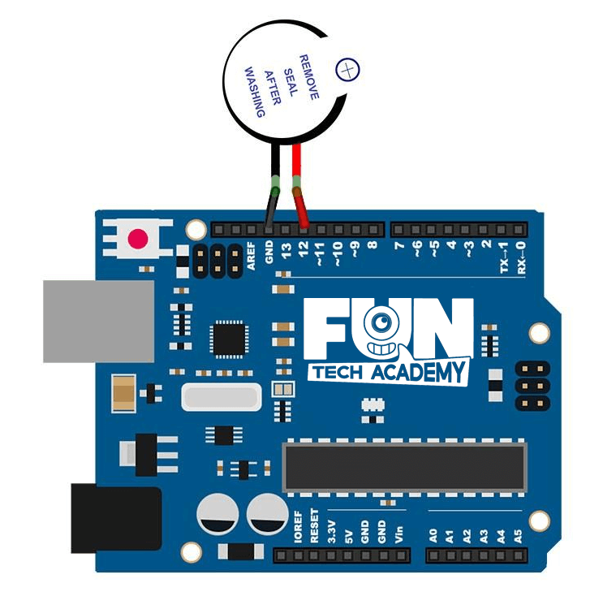

En este tema, aprenderemos a generar un sonido con un zumbador activo.
(1) x Placa Arduino
(1) x Zumbador
(2) x F M cables (cables de hembra a macho)
Los zumbadores electrónicos son componentes alimentados por CC (corriente continua). Suelen ser equipados en
los circuitos integrados de las fotocopiadoras, alarmas, juguetes electrónicos, teléfonos y otros productos
electrónicos para dispositivos de voz.
Estos componentes emiten un pitido cuando son activados y al tener la placa de arduino podemos configurar en
que momento harán el pitido.

Una vez efectuado todo el cableado, descargaremos el script del siguiente link y lo cargaremos como hemos aprendido.
Si tenemos todo el cableado bien, deberíamos tener algo como en la imagen, de no ser así debemos revisar los apartados anteriores.
Volver al índice